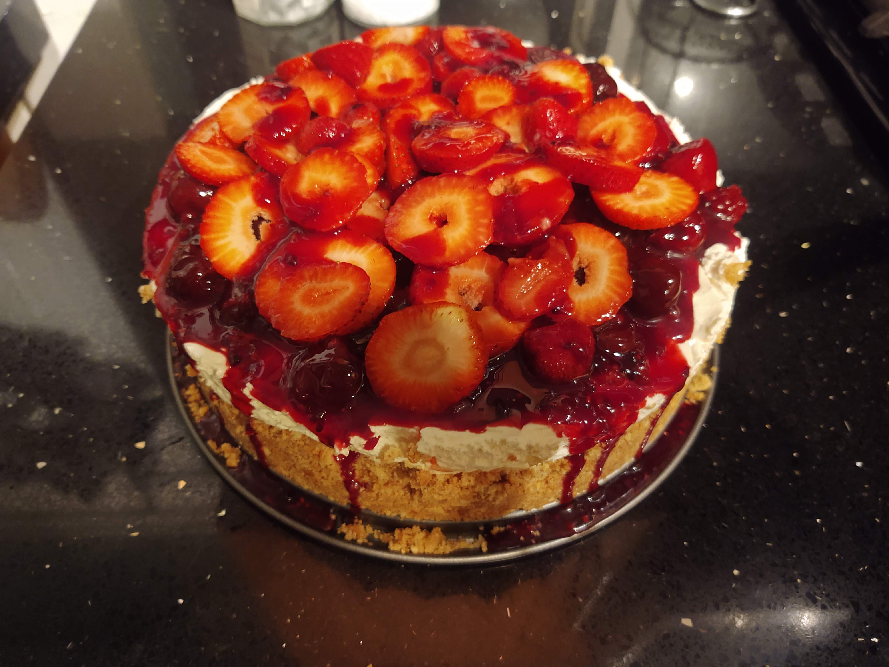

Lasagna...or cake?

Oooey Gooey Lasagna
Here you'll find a real recipe for lasagna that I made last week.
Quite simple recipe actually.
Only requires a few special tools such as a blowtorch and strawberry de-seeder
After 3-8 hours of work you'll have this delectable cheesey cake...i mean lasagna. It's got layers so it's the same.
Ingredients
- Cheese...duh
- Flour
- Red sauce
- Butter maybe
- and some spices. Anything that's been sitting in the back of the cabinet will do
Recipe
- Great the cheez
- Cream the cheese with the flour set aside
- De-seed your berries. Yep, you gotta get them all. Use a de-seeder. Should take you about 10 minutes per berry, so like 2 hours
- Mash berries into sauce, use some butter if it helps
- Don't forget to add spices at any point
- Pour chez mizzture over the mess
- Blow torch until done
- Set on dog food dish to cool
- Serve with your favorite Matza Ball Towers
Back to the start